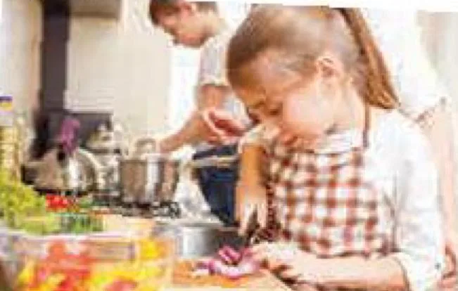

How to become independent
Lesson 3 — Reading
8Five stops in 45 minutes
- 🎭
Warm-up
Act it out
5 min - ✅
Pre-reading
How independent are you?
8 min - 📖
While-reading
Tasks 2–4
21 min - 💬
Post-reading
Which skills do you have?
8 min - 🏁
Wrap-up
Exit ticket
3 min
Warm-up
Act it out
5 minutesPre-reading
How independent are you?
8 minutesHow independent are you?
| How often do you …? | Always 3 pts | Sometimes 2 pts | Never 1 pt |
|---|---|---|---|
| 1. go to school by yourself | |||
| 2. cook meals for your family | |||
| 3. communicate well with people | |||
| 4. think carefully before making decisions | |||
| 5. plan how to save and spend your pocket money |
While-reading
How to become independent
21 minutesHow to become independent

Becoming independent is important for teenagers. Below are the necessary skills you should learn to achieve independence for the future.
A. ________
First, make sure you can safely get around by yourself using public transport, walking, or cycling. Second, learn to communicate well and develop good relationships with people. Do some part-time jobs and get to know how to manage your money. You should also learn to cook healthy meals for your family. Finally, help your parents with household chores like cleaning and doing laundry.
B. ________
To begin with, identify the problem and come up with as many solutions as possible. Write down the options, so you can review the advantages and disadvantages of each one. This will help you see which option could be the best for you. Don’t base your decision on emotion only. Once you have made your choice, create a plan of specific steps to move forward. Then carry out your plan, and think about whether you have achieved the result you wanted.
C. ________
First of all, get into the habit of making a to-do-list every day or week. Make use of time-management tools, such as apps or diaries, to know what you need to do next. In addition, decide how much time you need for each task and always do one thing at a time to make sure you complete it. Schedule time to relax as well, and make sure you sleep at least nine hours each night. A good night’s sleep is necessary for teenage brain development and good health.
Becoming independent is not easy, but it is not as challenging as you may think. It’s about learning useful skills, making decisions by yourself, and knowing how to spend your time.
Match the headings
1. Manage your money · 2. Relax and sleep well · 3. Develop time-management skills
4. Improve your decision-making skill · 5. Learn basic, but important life skills
Paragraph A 5. Learn basic, but important life skills
Paragraph B 4. Improve your decision-making skill
Paragraph C 3. Develop time-management skills
Match 1–5 with a–e · 7 min
1. get around c
2. come up with e
3. carry out b
4. get into the habit of a
5. make use of d
a. to start doing something regularly so that it becomes a habit
b. to perform and complete something
c. to go or travel to different places
d. to use something to achieve a particular result or benefit
e. to produce or find an answer or a solution
Two skill maps
Decision-making skills
Identify the problem → Think of (1) ________ many solutions → Review pros and cons → Pick the (2) ________ best option → Create and carry out your plan
Time-management skills
Make (3) ________ a to-do list → Use time-management tools → Do one thing at a time → Schedule time to relax → Have a good (4) ________ night’s sleep
Post-reading
Which skills do you have?
8 minutesWhich of the skills in the text do you have?
❓ What other skills do you think teenagers need to become independent?
🗣️ We can already … · We don’t quite know how to … · It is … skills that we have to develop.
Our skills
From the skills mentioned in the text, both of us have several basic life skills such as getting around by ourselves, cooking healthy meals for our family, cleaning the house, and doing laundry. Unfortunately, we don’t quite know how to manage our money and time. It is the money-management and time-management skills that we have to develop.
Also, we agree that teenagers need emotional skills. It is emotional skills that help teenagers behave appropriately, make friends, and become independent.
Before you leave…
1. Name the three groups of skills in the text. basic life skills · decision-making skills · time-management skills
2. What does come up with mean? to produce or find an answer or a solution
3. Your goal for the next 7 days: I will get into the habit of … Students’ own answers
Homework
1. Write a short paragraph about some skills teenagers should have to live independently.
2. Do the Reading exercises in the workbook.
3. Prepare for Lesson 4 — Speaking: learning basic life skills.